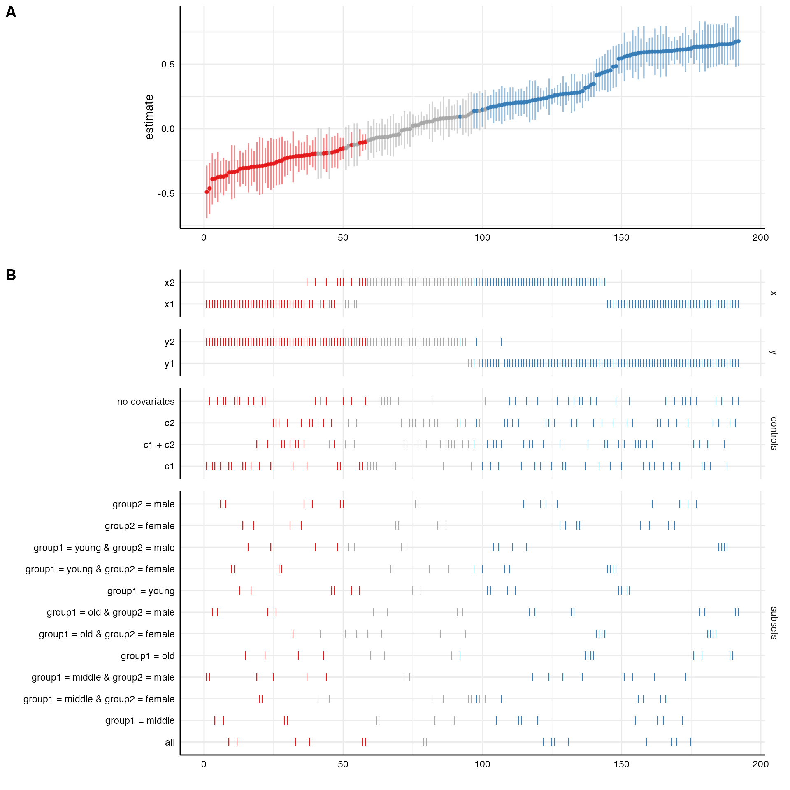

This vignette exemplifies different ways to plot the specification curve. For most cases, the function plot_specs() takes care of the overall process. However, more specific customization is possible if we use the more specific functions plot_curve() and plot_choices. Furthermore, we can extend the overall plot with the additional function plot_samplesizes(). All of these functions produce objects of the class ggplot that can be customized further using the grammar of graphics provided by the package ggplot2.
1. Run the specification curve analysis
In order to have some data to work with, we run the minimal example included in the package.
library(specr) library(dplyr) library(ggplot2) library(cowplot) # run spec analysis results <- run_specs(example_data, y = c("y1", "y2"), x = c("x1", "x2"), model = "lm", controls = c("c1", "c2"), subset = list(group1 = unique(example_data$group1), group2 = unique(example_data$group2)))
Let’s quickly get some ideas about the specification curve by using summarise_specs()
summarise_specs(results)
## # A tibble: 1 x 7
## median mad min max q25 q75 obs
## <dbl> <dbl> <dbl> <dbl> <dbl> <dbl> <dbl>
## 1 3.59 4.56 -2.05 9.58 1.03 7.63 123summarise_specs(results, x)
## # A tibble: 2 x 8
## x median mad min max q25 q75 obs
## <chr> <dbl> <dbl> <dbl> <dbl> <dbl> <dbl> <dbl>
## 1 x1 3.59 4.42 -2.05 9.28 0.510 6.51 123
## 2 x2 4.40 4.84 -0.258 9.58 1.31 7.79 123We see that it makes quite a difference whether x1 or x2 is used as independent variable.
2. A simple way to visualize the results
The simplest way to visualize most of the information contained in the results data frame is by using the plot_specs() function.
plot_specs(results)

We can further customize that function, e.g., by removing unnecessary information (in this case we only specified one model, this analytical choice is hence useless) or by reordering/transforming the analytical choices (and thereby visualize specific contrasts).
plot_specs(results, choices = c("x", "y", "controls", "subsets"), # "model is not plotted rel_heights = c(1, 2)) # changing relative heights

# Investigating specific contrasts results %>% mutate(group1 = ifelse(grepl("group1 = 0", subsets), "0", "1"), group2 = ifelse(grepl("group2 = A", subsets), "A", "B & C")) %>% plot_specs(choices = c("x", "y", "controls", "group1", "group2"))

3. An alternative way to visualize the results
3.1. Plot curve and choices seperately
The overall function plot_specs() is not very flexible. Alternatively, we can plot the specification curve and the choice panel individually and bind them together afterwards. This is useful as it allows us to customize and change both individual plots.
# Plot specification curve p1 <- plot_curve(results, ci = FALSE, ribbon = TRUE) + geom_hline(yintercept = 0, linetype = "dashed", color = "black") + ylim(-8, 14) + labs(x = "", y = "unstandarized regression coefficient") + theme_half_open() # Plot choices p2 <- plot_choices(results, choices = c("x", "y", "controls", "subsets")) + labs(x = "specifications (ranked)") + theme_half_open() + theme(strip.text.x = element_blank()) # Combine plots plot_specs(plot_a = p1, plot_b = p2, labels = c("", ""), # remove plot labels rel_height = c(2, 2.5)) # adjust relative heights

3.2. Include sample size histogram
By default, we do not know how many participants were included in each specification. If you remove missing values listwise, this may not be a big problem as all models are based on the same subsample. If you have missing values in your dataset and you did not impute them or delete them listwise, we should investigate how many participants were included in each specification. The function plot_samplesizes() provides an additional panel that can then be added to the overall plot using cowplot::plot_grid()
p3 <- plot_samplesizes(results) + theme_half_open() # Combine via cowplot plot_grid(p1, p2, p3, ncol = 1, align = "v", rel_heights = c(1.5, 2, 0.8), axis = "rbl")